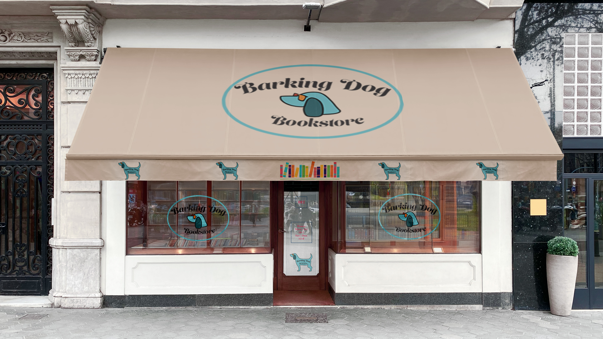
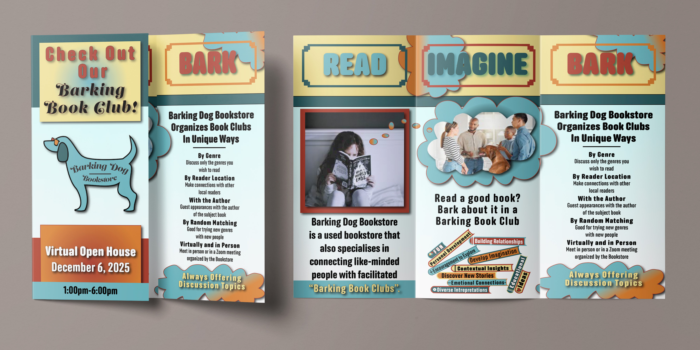
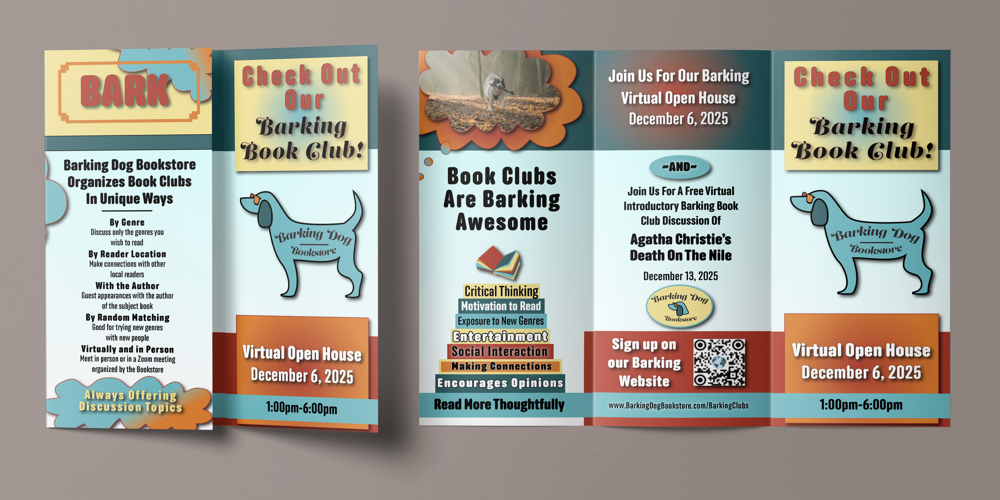
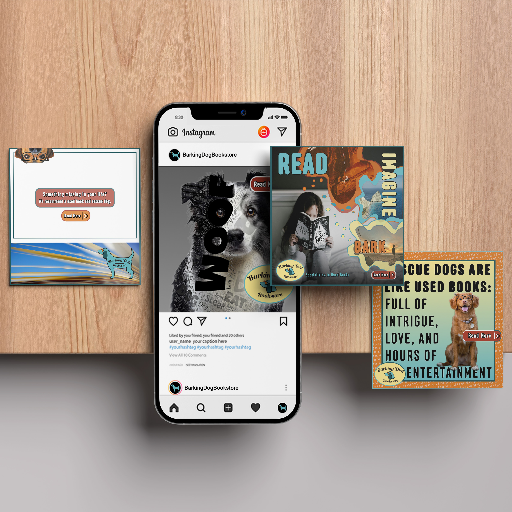
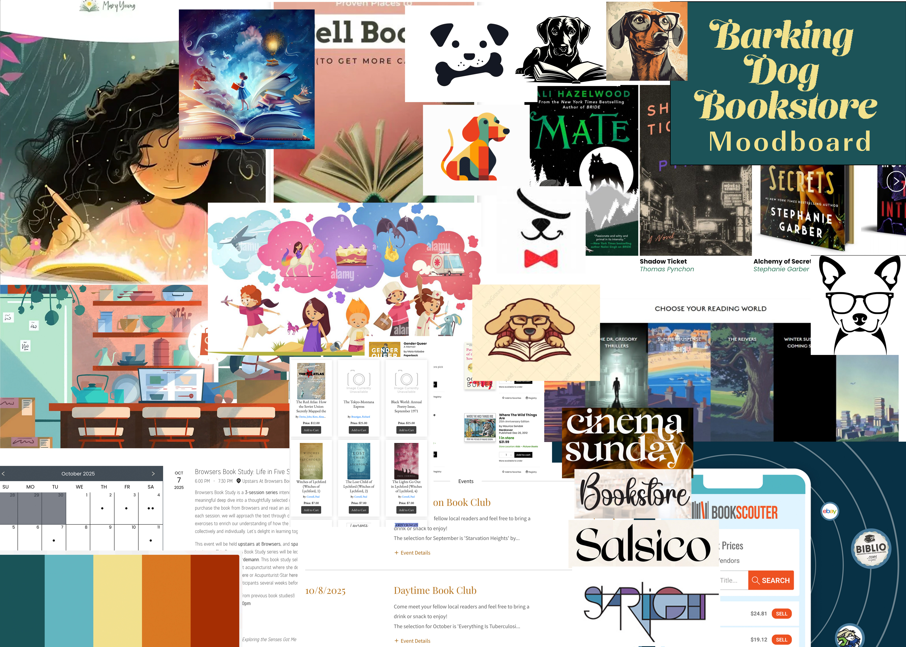
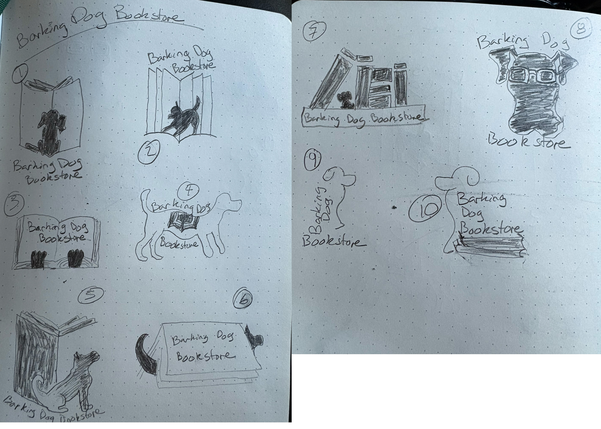
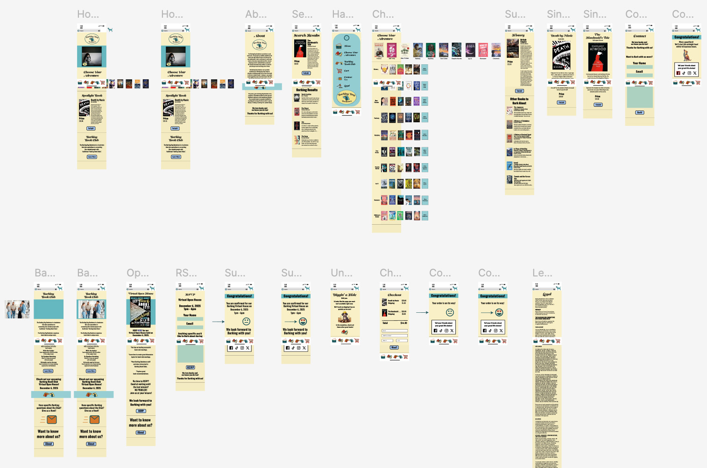

SOFTWARE
Adobe InDesign
Adobe Illustrator
Adobe Photoshop
Figma
ROLE
Brand Identity Designer
Print Designer
Digital Designer
DELIVERABLES
Logo Design
Brand Identity System
Print Collateral
Digital Applications
Brand Guidelines
TOOLS & CREDITS
Barnes & Noble (book images for educational purposes only)
Envato Elements (licensed subscription assets & mockups)
PROJECT OVERVIEW
Barking Dog Bookstore is an independent bookstore concept built around community, discovery, and the joy of reading. The goal was to create a warm, approachable brand identity that captured the personality of a neighborhood bookstore while incorporating a playful connection to rescue dogs and reflective of the personality found within a neighborhood bookstore.
The brand system combines expressive typography, playful illustration, and cohesive print and digital applications to create a recognizable experience across customer touchpoints.
DESIGN APPROACH
The visual direction balances the warmth of a local bookstore with a playful, modern identity inspired by storytelling, community, and canine companionship. The identity was applied across logo development, promotional materials, social media graphics, print collateral, and digital experiences to create a cohesive and memorable brand presence.
Promotional flyer created to introduce the Barking Bookclub experience by inviting the community to check out the virtual Open House, and communicate the benefits of joining a shared reading community.

Front-facing brochure pages design demonstrating the brand system through structured layout, typography, and engaging customer-focused messaging. The purpose is to invite the community to the Barking Bookclub virtual Open House.

Back pages of the brochure layout continuing the visual system through consistent typography, hierarchy, and informational content.

Social media campaign applications extending the Barking Dog Bookstore identity into digital spaces through playful imagery, promotional messaging, and storytelling centered around books and rescue dogs.
Animated social media application bringing movement and personality to the Barking Dog Bookstore identity through digital storytelling including a creative call to arms.

A client-facing design guide created to communicate the visual direction of the Barking Dog Bookstore brand. The guide presents logo concepts, typography, color selections, imagery, and design recommendations to help define the brand’s personality and establish a cohesive visual system.

Barking Dog Bookstore concept moodboard demonstrating development of color scheme, image inspiration, and typography ideas.

Early logo exploration sketches showing the development of visual concepts, character direction, and the foundation of the final brand identity.

Mobile app concept extending the Barking Dog Bookstore experience into a digital platform designed for customer interaction and engagement.
 View Interactive Prototype
View Interactive Prototype
Explore Barking Dog Bookstore through an interactive high-fidelity prototype designed to bring the complete user experience to life. Click through the pages to experience the website's navigation, layout, content, and visual design as a connected digital experience.
The Barking Dog Bookstore mobile experience brings the brand’s personality to life through a playful book-buying app designed for readers and dog lovers alike. The high-fidelity prototype features intuitive browsing, purchasing flows, and Barking Bookclub registration while incorporating light colors, canine-inspired humor, and interactive scrolling elements to create a fun and welcoming digital experience.
Let's write the next chapter together.
CONTACT ME